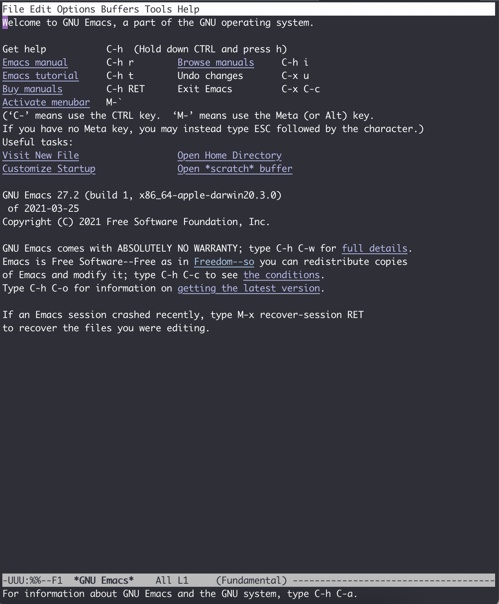

Basic operations
This chapter introduces the basic knowledge and operations of GNU Emacs. It is only meant to give readers a first look at Emacs operations, which should require daily practice over time to master. As a result, the latter part of this chapter is more geared towards future reference. On the other hand, many operations are somewhat complicated and hard to remember. The following chapters of this tutrial will introduce some extensions which can greatly alleviate these problems, so if readers encounter anything obscure, there's no need to worry too much or memorize them by rote.
The end of this chapter includes a list of shortcuts and their command names mentioned in the text for readers to consult.
Meanwhile, never forget the Emacs Reference Card and the Emacs Survival Card, which serve as the cheatsheet.
Installation
As of the date of this chapter's update (June 6, 2024), the stable version of Emacs is 29.3. It is recommended to use the latest version, at least 26 or above, since some packages require higher Emacs versions. Notably, Emacs 28 introduced acceleration on running Emacs Lisp using GCC JIT, significantly boosting its performance.
To install the graphical interface, download the installer package from the official site. Alternatively, you can also use package manager for installation.
For macOS:
1$ brew install --cask emacsDebian/Ubuntu:
1$ sudo apt-get install emacsOn other OS the installation method is similar, and the details are omitted here because the official download page is good enough.
Startup
With GUI, simply open the application. With terminal, run the following command:
1$ emacs
If you have installed a GUI Emacs but want to open non-GUI Emacs in terminal, run with -nw:
1$ emacs -nw # no window systemAppend the file name after the command if you want to open the specific file.
There is a default welcome page with an "Emacs tutorial". It walks through the basic operation of Emacs more interactively and the reader is recommended to have a try after reading this chapter. It is possible to change the language of the builtin tutorial, by typing M-x help-with-turorial-spec-language (the way to input is introduced below).

The way to exit Emacs is in the appendix of this chapter.
About Keyboard Shortcuts
Why use so many shortcuts in Emacs?
Emacs is created before the GUI applications. It is designed to be used without a mouse. Even nowadays, the most efficient editing way is also avoid using mouse too much. The more frequent an operation is, the less mouse operation should be involved. You can put your hands at the keyboard and try to get the mouse. What you have to do is move your hand, find the mouse, find the cursor, move the cursor to the appropriate position, adjust the position, click and finally move your hand back to the keyboard. It not only takes a non-trivial time to complete the whole process, it also interrupt your mind to do the job conherently.
Keyboard shortcurs is invented to help improve the issue. And Emacs
Keyboard shortcuts were invented to improve the efficiency. In Emacs, this concept is taken to the extreme, with nearly every action having a corresponding shortcut. While this can be challenging for programmers, requiring a significant amount of memorization, it fosters muscle memory and ultimately leads to high efficiency.
Keyboard shortcuts are highly customizable, allowing users to tailor them as their preferences. While I'll share some personal experiences, readers are neither required nor encouraged to follow them exactly – it's essential to adapt them according to one's own habits and needs.
Function Keys
There are five main function keys in Emacs, Control , Meta , Shift , Super , and Hyper. Some names may not be familiar to the readers, which are actually the names on the keyboard tens years ago. The Hyper even disappeared in modern keyboard.
So, what about the Meta and Super ? Meta is the Alt key on PC and the Option on Mac. Super is the Win on PC and Command on Mac. As we've known, the Super key plays an important role in modern operating systems, so there are no shortcuts bound to Super by default. In Emacs, most of the shortcuts involves Control and Meta, and the formal one is even more common.
Though the Hyper key has vanished, Emacs still supports its functionality; keyboard users with less frequently used keys might consider remapping them to Hyper for expanded shortcuts, an exercise left to the reader's exploration.
In fact, there is also an Alt key in Emacs, but modern keyboards typically map it to Meta, and Alt is rarely utilized. To avoid confusion, it is not covered in this tutorial.
Noticeably, the Control key is a hotspot for Emacs users, with their pinky finger often strained when pressing it. As such, I strongly recommend modifying your keyboard layout after familiarizing yourself with Emacs to protect your fingers.
For instance, I have made Caps Lock key to be remapped to the Control key (readers can choose to swap them, but since Caps Lock is rarely used, I simply overwrote it). Also, you can use the strong thumb instead. On a PC, you could switch the Windows key with Control, while on a Mac, the Command key could be used instead. If you prefer not to change globally, adjustments can be made specifically within Emacs, as we will discuss later.
If you are a Mac user, I recommend a keyboard customizer named Karabiner-Elements. It can be configured with customized key mapping.
In Emacs, since we usually configure the keyboard shortcuts, there has to be a way to represent the function keys. Emacs uses a single letter, as shown below.
| Emacs Function Key | Symbol | Actual Key (PC/Mac) |
|---|---|---|
| Control | C | Ctrl / Control |
| Meta | M | Alt / Option |
| Shift | S | Shift / Shift |
| Super | s | Win / Command |
| Hyper | H | None |
In Emacs, a hyphen denotes "hold down." For example, C-a represents "press and hold Control, then press a." C-x b means "hold Control and press x, then release both, and press b." C-S-<mouse-1> means "press and hold Control and Shift simultaneously, then click left mouse." Though Emacs does not need mouse, the Emacs graphical interface supports mouse operations. In certain scenarios, using the mouse can be more convenient, e.g., for irregular multi-cursor selections.
Notably, the Meta prefix has two ways to conduct: M-x can be entered either by "holding down Meta and then pressing x" or by "first pressing Esc and release, then press x". The latter is provided as a fallback for systems or hardware without a dedicated Meta key. But from users' experience, the latter is not convenient in daily usage. Therefore, readers are encouraged to use Alt~/~Option as the Meta whenever possible.
Option as Meta by default. But users can open the Preferences, find the "Profiles - Keyboard", tick the "Use Option as Meta". Other terminal like iTerm2 are similar.
Emacs Command
Before introducing the shortcuts, it is essential to explain the basic logic of Emacs. Similar to other text editors, the user conduct "command" to interact with Emacs. A command is actually a function defined in Emacs Lisp language that finish the user request. For example, even the simplest operation "move the cursor up" corresponds to command previous-line . Every operation is a command, and the keyboard shortcuts is bound to call the command.
To explicitly call a command, type M-x, and you will a see a line appears at the bottom of Emacs with "M-x ", waiting for your input. You can input a command name (i.e., function name) to call a command. The M-x shortcut is the most important shortcut in Emacs. If you forget the other shortcuts, you can always call the command directly with this shortcut.
The convention of naming a command is using hyphen to connect several words. When inputing the command, the hyphen can be replaced with space and be expanded with <tab> key.
M-x is also a command named execute-extended-command .
Basic Shortcuts
The following lists some commonly used shortcuts. You can open any text or code to have a try, e.g., the integrated tutorial inside Emacs. Press C-h t if you do not know how to find it (remember to release the Control and h before pressing t).
evil package can be installed to have the same editing experience as Vim, so you can skim the below content. The way of installing a packaage is introduced in chapter Configurations and chapter Enhancement.
Exit Emacs
To exit Emacs, press C-x C-c .
When inputing a command or shortcuts and you change your mind and want to give up, press C-g. Anytime something works strangely or gets stuck, you can always try C-g to interrupt the process.
Cursor movement
Even cursor movement requires a shortcut? Yes, Emacs binds arrow keys to shortcuts too. This is due to the placement of the arrow keys on a keyboard is usually at the bottom right corner of a keyboard. Using them would necessitate hand movement away from the center area of the keyboard. On the other hand, moving cursor is definitely very frequent when editing. Thus, Emacs considers such interruptions to be detrimental to the workflow of editing.
The shortcuts for up , down , left, and right are C-p, C-n, C-b and C-f . The meanings are "previous", "next", "back" and "forward". It may feel strange to use these shortcuts at first, but when you get familiar with them, it could be highly efficient.
Besides the basic cursor movement, Emacs provides many other ways:
- Move by word:
M-bto move back a word,M-fto move forward a word. -
Beginning and end
- Line:
C-ato move to the beginning of a line.C-eto move to the end of a line. Since many programming language has indent with spaces or tab,C-awill always move to the exact beginning of the line including white spaces, which is not often the case we want. PressM-mto move to the beginning of the line excluding the indention. The following chapter Improve the native operations will introduce a packagemwimto improve this operation. - Sentence:
M-ato move to the beginning of a sentence.M-eto move to the end of a sentence. - File:
M-<to move to the beginning of a file.M->to move to the end of a file. Notice that you need to press and holdMeta,Shiftand comma / period at the same time.
- Line:
- Window: the first time you press
M-r, the cursor will move to the center of current window. Pressing it again move to the top and the pressing the third time to move the bottom.
By the way, macOS has some of these cursor movement shortcuts globally. The reader is highly recommended to practice these shortcuts and fosters muscle memory.
M-~ to call tmm-menubar, press t to choose "Tools", press g to choose "Games", and press s to choose "Snake". Here you go!
Editing
- Delete character: to delete a character before the cursor, press backspace as usual (which is called
<DEL>or<backspace>in Emacs). To delete a character after the cursor, useC-d. - Kill word: Press
M-dto delete a word after the cursor. PressM-<DEL>to delete a word before cursor. - Kill sentence: Press
M-kto kill the sentence from current point to the end. - Kill line: Press
C-kto kill the line from current point to the end. - Select a region: move cursor to the beginning, press
C-SPC(SPCmeans space). A string "Mark set" will appear at the bottom of the window, which means selection start. Then move the cursor to the end of the region you want to select, same as usual. PressC-gto cancle. - Copy: Press
M-wto copy a region. - Kill: Press
C-wto kill a region.
Readers should have noticed that here we mention two operations, "Delete" and "Kill". "Delete" is delete the content completely. "Kill" is similar to "cut", which means the content will be saved to a history and could be pasted to another position, which is called "insert".
Control is more convenient than Meta . As a result, the author swapped the two bindings to make C-w to copy and M-w to kill. You can also modify the bindings as your will.
Emacs keeps a history ring that stores the content you've killed. Press C-y to paste the latest content, which is called "yank" in Emacs. To paste older history, press M-y after pressing C-y , and keep pressing M-y to scroll back. Actually this is not intuitive enough, so in the chapter Improve the native operations we will introduced a package counsel to help.
- Undo: to undo the latest operation, press
C-/orC-_orC-x u. One execption is that directly editing text will be undone in group up to 20. - Redo: Emacs keeps the operations history also in a ring. To redo, you need to press
C-g, which means "no operation" and do the "undo", leading to a redo. It can also be seen asC-gchanges the moving direction of the history ring. Readers might complain that this is very intuitive, so in chapter Improve the native operations we will introduce a packageundo-treeto help.
Mark and jump
The C-SPC command mentioned above is not only used to select a region of text. It is actually making a mark. A common practice is press C-SPC twice to make a mark without select any text. Then if we have moved the cursor to somewhere else, press C-x C-SPC or C-u C-SPC will jump directly back to where we marked. Also, package counsel will help improve the process.
To jump to a specific line, press M-g M-g and input the line number, then press enter.
Repeat
Emacs provides a feature to repeat a command several times. Specificly, press C-u and input a number, then do the operation you want. For example, press C-u 12 C-n will move the cursor down by 12 lines. If no number is input, the default number is 4. This operation is actually passing a number as parameter to the C-n.
Besides, you can also press and hold Meta or C-M- and press a number to do the same thing. In GUI Emacs, you can also press and hold Ctrl and press a number.
C-u is actually a shortcut for universal-argument for "prefix argument". For most command, it means repeat the command several times. For the other commands, it has special meanings. For example, pressing C-u M-x means "search command by prefix". An analogy is that we press 1 to type a 1 and we press shift+1 to type an exclamation mark. C-u is the same as the shift. Since a number argument can be passed to C-u, it can be used to many things. To find commands that support the prefix argument, see the help message in the command's manual, instructed in section Get Help.
Page movement
Press C-v to scroll one page down, M-v to scroll up. Emacs will keep 3 lines not being scrolled to make it more comfortable.
Press C-l once to scroll the content and make the current position of the cursor at the center of the window. Press again to make the position of the cursor at the top of the window. Press the third time to make it to the bottom.
Search
To search after the current position of the cursor, press C-s . A prompt "I-search: " will show at the bottom of the window. Input the text you want to search.
To find the next pattern matched, press C-s again. If you find your desired pattern, press enter to stay here. If you want to give up the searching, press C-g and it will jump back to where you've started.
To find the pattern before the current cursor, press C-r instead.
To use regular expression to search, press C-M-s or C-M-r to search forward and backward.
Package swiper will make things easier, which will list the occurrance and support regular expression by default. It be introduced in chapter Improve the native operations.
To show some lines containing a pattern in a long file (a log for example), use M-s o ( or M-x occur ) and enter the regular expression. The Emacs introduction to regular expression is here.
Other tricks
- Swap the character before and after the cursor:
C-t. Swap the word instead:M-t. Swap the line:C-x C-t. Also there are ways to swap the sentence, paragraph and region, see the documentation for details. - Create a new line after the current line without moving cursor:
C-o. To make all continuous empty lines to one line:C-x C-o. - Downcase the word after the cursor:
M-l. Upcase the word:M-u. Captilize the word:M-c. - Zoom in:
C-x C-=. Zoom out:C-x C--. Reset zooming:C-x C-0.
Get help
Emacs has many ways to get help, all prefixed with C-h.
- Get a brief help message of a shortcut:
C-h cand then press the shortcut. For example, pressC-h c C-pand a line "C-p runs the command previous-line" will be shown at the bottom. - Detailed documentation of a shortcut:
C-h kand press the shortcut. - Detailed documentation of a command (function):
C-h fand input the command name. - Variable information:
C-h vand input the variable name. - Command search by keyword (Command Apropos):
C-h aand input a keyword to search. - List a documentation with a keyword:
C-h dand input a keyword.
So many ways to help? Press C-h ? to list the above helps.
A small package which-key can help to input shortcuts, which will be introduced in chapter Improve the native operations.
C-/ to C-_ and C-SPC to C-@. It does not affect the editing but users should be careful if they want to rebind the keys.
Appendix: commands list
| 操作描述 | 快捷键 | 命令名 |
|---|---|---|
| Execute a command | M-x | execute-extended-command |
| Exit Emacs | C-x C-c | save-buffers-kill-terminal |
| Interrupt/Give up | C-g | keyboard-quit |
| Line up | C-p | previous-line |
| Line down | C-n | next-line |
| Left | C-b | backward-char |
| Right | C-f | forward-char |
| Move to left by a word | M-b | backward-word |
| Move to right by a word | M-f | forward-word |
| Move to the beginning of line | C-a | move-beginning-of-line |
| Move to the end of line | C-e | move-end-of-line |
| Move to the beginning without indent | M-m | back-to-indentation |
| Move to the beginning of sentence | M-a | backward-sentence |
| Move to the end of sentence | M-e | forward-sentence |
| Move to the beginning of file | M-< | beginning-of-buffer |
| Move to the end of file | M-> | end-of-buffer |
| Move to center, top and bottom of window | M-r | move-to-window-line-top-bottom |
| Delete character on right | C-d | delete-char |
| Kill word on right | M-d | kill-word |
| Kill word on left | M-DEL | backward-kill-word |
| Kill until the end of sentence | M-k | kill-sentence |
| Kill until the end of line | C-k | kill-line |
| Set mark for selection | C-SPC | set-mark-command |
| Copy | M-w | kill-region-save |
| Kill (Cut) | C-w | kill-region |
| Yank (Paste) | C-y | yank |
| Yank history (Paste history) | M-y | yank-pop |
| Undo | C-/ or C-_ or C-x u | undo |
| Jump to last mark | C-x C-SPC or C-u C-SPC | pop-global-mark |
| Go to line | M-g M-g | goto-line |
| Repeat/Pass argument | C-u | universal-argument |
| Scroll down | C-v | scroll-up-command |
| Scroll up | M-v | scroll-down-command |
| Move page to make cursor at the center/top/bottom | C-l | recenter-top-bottom |
| Search forward | C-s | isearch-forward |
| Search backward | C-r | isearch-backward |
| Search forward in regex | C-M-s | isearch-forward-regexp |
| Search backward in regex | C-M-r | isearch-backward-regexp |
| Filter lines with pattern | M-s o | occur |
| Swap characters aside cursor | C-t | transpose-chars |
| Swap word aside cursor | M-t | transpose-words |
| Swap line aside cursor | C-x C-t | transpose-lines |
| New line without move cursor | C-o | open-line |
| Delete continuous empty lines | C-x C-o | delete-blank-lines |
| Downcase the forward word | M-l | downcase-word |
| Upcase the forward word | M-u | upcase-word |
| Captilize the forward word | M-c | capitalize-word |
| Zoom in | C-x C-= | text-scale-adjust |
| Zoom out | C-x C– | text-scale-adjust |
| Reset zooming | C-x C-0 | text-scale-adjust |
| Summary the shortcut | C-h c | describe-key-briefly |
| Documentation of the shortcut | C-h k | describe-key |
| Documentation of the function | C-h f | describe-function |
| Documentation of a variable | C-h v | describe-variable |
| Search a command by keword | C-h a | apropos-command |
| Search a documentation by keyword | C-h d | apropos-documentation |
| Help for help | C-h ? | help-for-help |